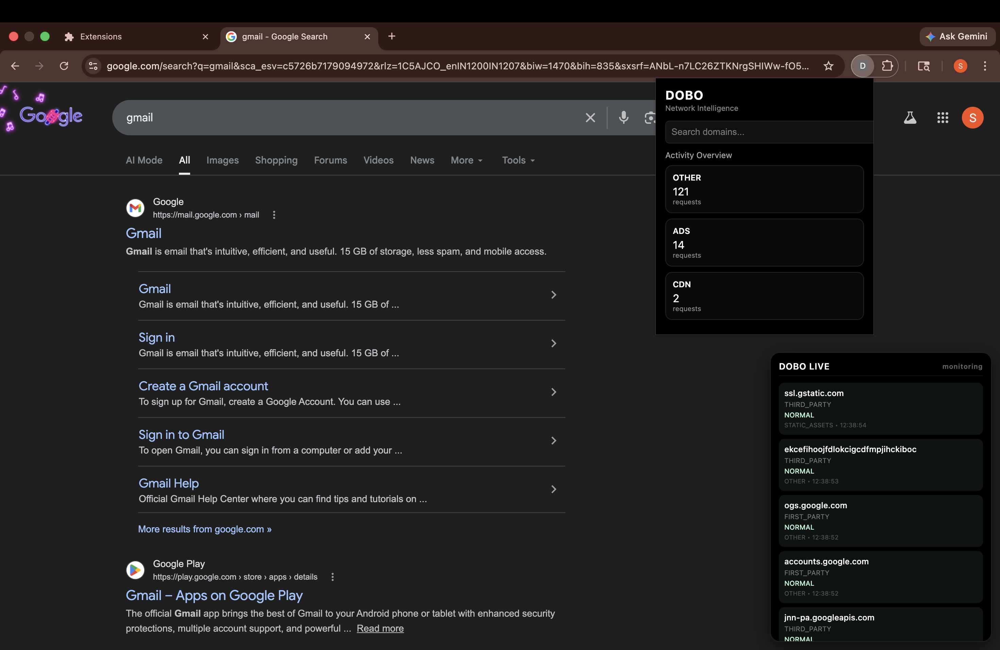

See where your data actually goes
DOBO is a real-time network transparency layer that reveals how your data travels across the web. Every interaction you make—whether browsing a site or using an AI tool—triggers multiple hidden connections to external domains. DOBO uncovers these interactions and presents them in a clear, structured, and actionable way.

Modern web platforms rely heavily on third-party services including analytics, advertising networks, CDNs, and cloud infrastructure. As a result, user data is often transmitted across multiple domains without explicit awareness.
This lack of transparency introduces risks such as tracking, profiling, and unintended exposure of sensitive information. DOBO addresses this by making these hidden connections visible and understandable.